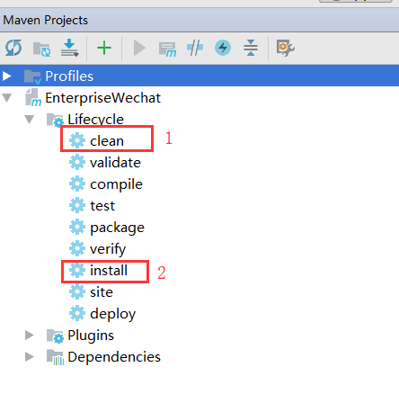

1、如果有本地jar包依赖，放到/WEB-INF/lib下，用system类型配到pom中
1 <dependency>
2 <groupId>org.wechat</groupId>
3 <artifactId>wechat-core</artifactId>
4 <version>2.0</version>
5 <scope>system</scope>
6 <systemPath>${pom.basedir}/src/main/webapp/WEB-INF/lib/WX.jar</systemPath>
7 </dependency>2、在pom的build标签下添加resources配置，将静态资源，以及本地依赖jar包 一起打包。（本人习惯将html之类的写webapp中）
1 <resources>
2 <resource>
3 <directory>src/main/webapp/WEB-INF/lib</directory>
4 <targetPath>BOOT-INF/lib/</targetPath>
5 <includes>
6 <include>**/*.jar</include>
7 </includes>
8 </resource>
9 <resource>
10 <directory>src/main/resources</directory>
11 <includes>
12 <include>**/*</include>
13 </includes>
14 </resource>
15 <resource>
16 <directory>src/main/webapp</directory>
17 <includes>
18 <include>css/*</include>
19 <include>js/*</include>
20 <include>templates/*</include>
21 </includes>
22 </resource>
23 </resources>3、设置编码以及启动类
1 <plugins>
2 <plugin>
3 <groupId>org.apache.maven.plugins</groupId>
4 <artifactId>maven-compiler-plugin</artifactId>
5 <configuration>
6 <source>1.8</source>
7 <target>1.8</target>
8 <encoding>utf-8</encoding>
9 </configuration>
10 </plugin>
11 <plugin>
12 <groupId>org.springframework.boot</groupId>
13 <artifactId>spring-boot-maven-plugin</artifactId>
14 <configuration>
15 <mainClass>com.newland.run.App</mainClass>
16 </configuration>
17 </plugin>
18 </plugins>4、不打包测试文件（没写单元测试的，可以忽略），在project标签下添加
<properties>
<skipTests>true</skipTests>
</properties>5、修改启动类
1 @SpringBootApplication
2 public class App extends SpringBootServletInitializer {
3 public static void main(String[] args) {
4 SpringApplication.run(App.class, args);
5 }
6
7 @Override
8 protected SpringApplicationBuilder configure(SpringApplicationBuilder builder) {
9 return builder.sources(this.getClass());
10 }
11 }6、使用idea自带的maven管理打包，先clean，再install

7、最后，如果启动之后，还是发现中文乱码问题。加上file.encoding属性
java -Dfile.encoding=utf-8 -jar EnterpriseWechat-1.0-SNAPSHOT.jar